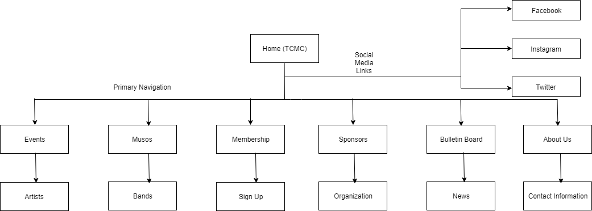

Name: Rabin Acharya ...
Student Id: 13603822, ...
The main intention of our website is to add new members in Townsville Community Music Centre and extend engagement for members on different activities organized by Townsville Music Centre, for example volunteering for administration, organising and promoting concerts and workshops. Secondly, the website helps to sale the ticket especially to general public. Similarly, The website can be helpful for organizing concerts for performers and encourage them to let Music center organize it. And lastly, the website is intended to encourage performer to cooperate with promotion, photo shoots, media releases, etc.
Home: Homepage will contain the insights about the music focus. The address and office working hours, helpful site connections and contact subtle elements.
About Us: It will give a information about the organization and contact details of the organization.
Bulletin Board: It will show the latest news about the details which includes expiry date, price of tickets and also it will have an external link for the event.
Membership: This section will be useful for new people who are willing to join as a member of Townsville Community Music Centre and encourage members to volunteer in administration, oragnise and promote in concerts and workshops.
Events: This section shows the information about list of upcoming as well as on-going with some photos.
...